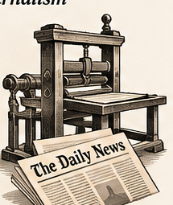

YESTERDAY
The Beginning of Journalism
Journalism changed over time. In 1440, the printing press was developed in Europe. In 1605, one of the first newspapers was published. Later, radio and television changed the way people received news. In the 1990s, digital journalism developed with the Internet, and newspapers started to publish news online.
